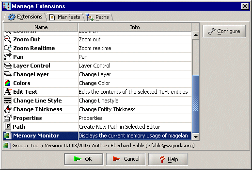
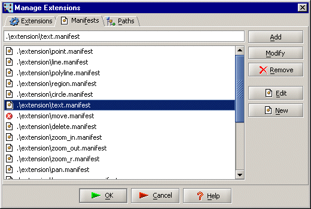
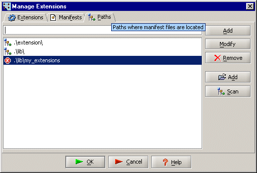

Magelan Graphics Editor Framework (editor 1.0)
Writing and Deploying Extensions
Extensions (along with entities) are a pivotal element of the Magelan framework. The establishment of a simple and compact model for extensions has always been a top priority during the development of this project. All toolbar commands, (except for the ones in the File toolbar) and even the Properties editor table, layer and linestyle controls are extensions. Everyone can easily create new extensions to improve the functionality of the editor and solve specific problems of their own.
All extensions extend the AbstractEditorExtension class, which in turn
is a subclass of Swing's AbstractAction class. Extensions are loaded
by the editor and typically placed in the extensions toolbar and menu as buttons.
The buttons and menu items will be automatically constructed and maintained by
the GUI. Note that in order to be successfully instantiated by the editor
extensions must have a public default constructor. Extensions also have to use the
following methods:
public Object getValue(String key)
public void setValue(String key, Object value)
This pair of methods is defined by the AbstractAction class to
allow manipulating of the properties used to visualize an Action.
The extension manager will recognize and use the properties listed below:
Action.NAME |
The name that will be used to identify the extension. (Note: the string should not be internationalized!) |
Action.SMALL_ICON |
An ImageIcon to represent the extension in toolbars and menus. |
AbstractEditorExtension.GROUP |
The group the extension belongs to. Extensions are placed in different menus and toolbars in accordance with the value of this property. |
Action.SHORT_DESCRIPTION |
Short extension description to be shown as a tooltip. |
Action.LONG_DESCRIPTION |
Long extension description to be shown in the status bar. |
Action.ACCELERATOR_KEY and Action.MNEMONIC_KEY |
The keys to be used for extension invocation. |
AbstractEditorExtension.VERSION |
Version information. |
AbstractEditorExtension.AUTHOR |
Information about the provider of the extension. |
public void run(DrawingEditor e)
The editor GUI will call this method when the extension has to be invoked.
The parameter DrawingEditor will point to the currently selected editor
or null, if no such editor.
public Component getComponent()
Some methods may need to provide more complex functionallity that cannot
be represented with a button. In such cases the extensions must override this
method to return their desired custom component. Depending on its type it
will be placed in the toolbars or in the tab panel on the left (if is an instance
of JScrollPane).
Manifests are plain text files (.mf or .manifest) containing information about extension's class name, paths to the required libraries or classes (if any), path to its help file and some human-readable tips about extension's functionallity.
The editor will read such manifest files and construct the extensions described by them. An example manifest file follows:
# Demo Class Manifest File |
Note that the paths are given relative to editor's working directory, which is the root directory of the extracted distribution package. Also note that the usage of \ or / path separators is platform specific.
After an extension has been created, compiled and located in a certain directory, a manifest file describing it must be created. The default (and preferred) place for extensions and their manifest files is currently the /extension folder. Extensions and manifests are handled by the Extensions | Manage dialog from editor's main menu bar.

There are two ways to tell the editor about a manifest file from the extensions manager dialog:
Declaring a Single Manifest
Select the Manifests tab and add the manifest file name to the list of known manifests. If the file cannot be located an error icon will appear next to its name. The order of the manifest files (which is also the order they will be loaded and placed in the toolbars the next time the editor is started) can be changed by dragging them with the right mouse button. To edit a manifest, choose the Edit button

Declaring Multiple Manifests
Select the Paths tab and add the directory the manifest file is located in. Again if the directory cannot be found an error icon will appear next to it.

To add all manifests located in the listed directories to the list of known manifests, choose the Scan button. This option is useful for deployment of multiple extensions.
Automatic Loading of Extensions
If the extensions.autoload option from the Preferences | Edit Workspace dialog is selected the editor will ignore the manifests listed in the Manifests tab of the extension manager dialog. It will instead scan the directories listed in the Paths tab (much as the Scan button will) for manifest files and load the corresponding extensions. The drawback is that the user could not influence the order the extensions will appear in the editor the next time it is started. This option is turned off by default.
Color Chooser
The actual color chooser extension. When extension's button is pressed the standard color chooser dialog appears. If there are no entities selected the current color is changed, if there are entitites selected their color is changed. If the choosing is cancelled the respective color property is set to ByLayer.
|
Colors.java | |
|
colors.manifest |
Document Info
Creation Date: 24/07/2003
Author: Assen Antov
Revision: 1
Revision Date: 01/10/2003
Revised By: Assen Antov